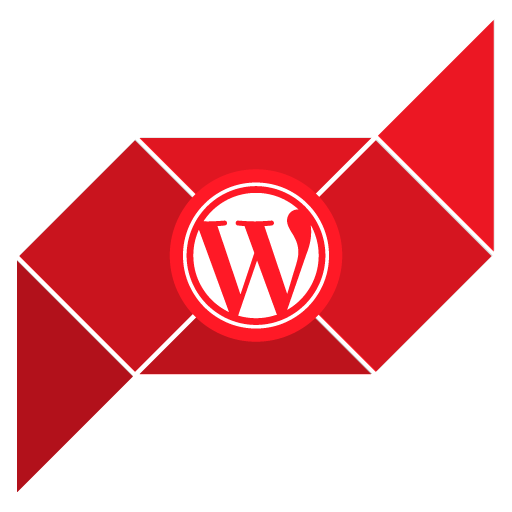

WordPress São Paulo
Bem-vindo ao site da comunidade de usuários de WordPress em São Paulo!
Aqui você terá acesso aos links e informação necessários para participar das atividades da comunidade.
Ver no GitHub
🌐 O que é o WordPress?
O WordPress é um projeto gratuito e de código aberto que você pode usar para criar sites, blogs ou aplicações web. Para entender mais sobre o projeto, recomendamos acessar o [site oficial](https://br.wordpress.org/).
👥 O que é a comunidade WordPress São Paulo?
---
A comunidade WordPress São Paulo é um grupo de pessoas que utilizam o WordPress e se reúnem para promover a utilização da plataforma. O principal ponto de contato entre os membros da comunidade são os *meetups*, encontros presenciais que contam com palestras, oficinas, troca de experiências e muita conversa sobre o WordPress.
Atualmente nossos encontros têm ocorrido mensalmente aos sábados, salvo algumas excessões. Saiba como acompanhar e interagir com demais membros da comunidade abaixo.
🗓 Meetups
---
Os *meetups* são econtros presenciais da comunidade, que consistem principalmente de palestras e oficinas sobre WordPress, além de claro, muita conversa e *networking*. Os meetups são organizados por membros voluntários da comunidade, que se encarregam de conseguir espaços para o evento, bem como organizar sua grade, data e demais detalhes de sua realização.
A comunidade WordPress São Paulo têm realizado meetups regularmente desde 2014! Para saber de novos eventos e se inscrever, acesse a plataforma meetup.com:
`🎟 Ingressos gratuitos`
**🎙 Seja um(a) palestrante!**
*Ninguém é tão grande que não possa aprender, nem tão pequeno que não posso ensinar!* - Esopo
O WordCamp São Paulo está aberto a palestras de todos os assuntos relacionados ao universo do WordPress: design, programação, marketing digital, conteúdo, dentre outros. Também não há restrições quanto à nível de conhecimento esperado do público, temos abertura para temas iniciais à avançados!
Interessado em compartilhar sua experiência? [Preencha o formulário](https://goo.gl/ta5dCv).
> Dúvidas? Entre em contato conosco, teremos o maior prazer em te ajudar na elaboração do seu tema ou mesmo mentorando a preparação de sua palestra.
💬 Slack
---
O Slack é uma plataforma de colaboração entre pessoas, muito utilizado para comunicação interna em empresas. Entretanto, muitas comunidades aderiram a plataforma, inclusive a nossa. Para participar e interagir com usuários do WordPress de todo o Brasil e discutir como fazer uma comunidade melhor, acesse: slack-wpbrasil.herokuapp.com
**Obs:** O Slack da comunidade WordPress Brasil não é para dúvidas sobre uso do WordPress. Para isso, prefira o [fórum oficial](https://br.wordpress.org/support/).
✳ WordCamp
---
O WordCamp é uma conferência originada nos Estados Unidos sobre tudo relacionado ao WordPress, plataforma open source de gerenciamento de conteúdo. São eventos organizados por comunidades de usuários do WordPress ao redor do mundo, onde desenvolvedores, designers, blogueiros e demais usuários podem assistir palestras e apresentações, trocar ideias e se conhecer em um ambiente informal.
Em 2009 foi realizado o primeiro WordCamp Brasil na cidade de São Paulo com a presença de Matt Mullenweg, desde então outros 6 WordCamps foram realizados em São Paulo, sendo o último em 2018, em parceria com a UNINOVE, em um evento para cerca de 500 pessoas.
- [WordCamp São Paulo](https://saopaulo.wordcamp.org)
- [Central de WordCamp's do mundo](https://wordcamp.org)
🔗 Redes Sociais
---
Siga-nos em nossas redes sociais e acompanhe as novidades da comunidade.
- [Twitter](https://twitter.com/WPsampa)
- [Instagram](https://www.instagram.com/wpsampa/)
- [Facebook](https://www.facebook.com/WordCampSaoPaulo/)